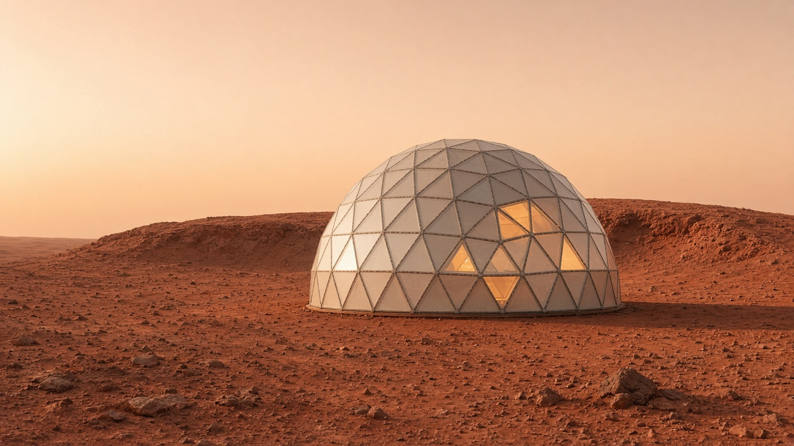

The Collective
The buyer needs a research settlement that can be defended. It has to reach Gusev on time, pack into the containers they already fly, and leave the ground fit for the next measurement.
Kepler · LEAP tender · 7 November 2056
the world in your hands
Move the light
620 nm · the light is leaving
Kepler's settlement for the Wayfarer's Collective. Twenty people in Gusev Crater, under a rigid geodesic dome that packs flat and can be raised again in seventy-two hours.
Kendrick School · Churcher's College · Berkhamsted School


The Collective needs a base on Mars within two years, and a base that can be taken apart. RedShift is Kepler's offer: small enough for two containers, quick enough to rebuild in seventy-two hours, and steady enough for a crew to do the work.
20Permanent staff, rotating every three months.
72 hTo assemble. The same again to take it down.
2 yrsFrom contract award to the crater.
The shell
The client has required a rigid shell. RedShift's form for that shell is a geodesic dome: triangular panels, shared edges, and a shape that stands on sand without a thick frame. The panels come apart, lie flat in the two CASSSCs, and go up again with hand tools inside seventy-two hours.
The dome in the photograph is the idea of the base. Structures will draw the real panels. Until that drawing is signed, this view stays an artistic rendition.
Who this is for
The buyer needs a research settlement that can be defended. It has to reach Gusev on time, pack into the containers they already fly, and leave the ground fit for the next measurement.
The Vision Rover has put a life question in front of people at home. They will not get a careful answer from a base that contaminates the site, or from one that cannot reach the next site.
Go to the ground. Do the work. Leave it clean enough to go again.
The client record
The Foundation Society built the road off Earth and stayed with the lunar settlements. The Wayfarer's Collective is the group that went on. Ymir is already in Mars orbit. In 2056 the Vision Rover reported organic byproducts beneath the soil in Gusev Crater. LEAP is the response: the first multi-year settlement on the surface, and one that can move.
What we are promising
Gusev Crater. Twenty people. Research and the ordinary work of keeping a base alive, in three-month turns, for ten years.
Survey, sample analysis, and the care of the TRAIL rovers. The rovers are the client's. The bay that serves them is ours to design.
Pressurised volume held to 1,500 m³. Rooms that earn their place twice. Nothing carried that the science does not need.
Two CASSSC containers. A rigid geodesic dome, in triangular panels that pack flat. Hand tools. Seventy-two hours up, and seventy-two hours down. Research kit and rovers stay outside that pack, as the client has said.
Earth life stays inside. The mark we leave on the surface stays small. Passive design first, and a rehearsed cleanup if that fails.
Three months with no ship if it comes to that. Deliveries no larger than 5 m³. A base people can live in, not only work in.